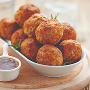

1.SOČNE PILEĆE ŠNICLE:
Sastojci:
300g pilećeg belog mesa
100g senfa
1 šolja integralnog pšeničnog brašna
2 čena belog luka
1 šolja vode
himalajska so, mleveni biber
Priprema recepta
Isecite pileće belo meso na tanke šnicle, premažite ih senfom sa svake strane i ostavite da odstoje pola sata. Zatim
svaku od njih uvaljajte u integralno pšenično brašno i pržite vrlo kratko na tankom sloju maslinovog ulja,
tek da porumene sa svake strane. Kada su šnicle rumene sa obe strane, prelijte šoljom vode, pospite sitno seckan
beli luk preko njih, a zatim prelijte šoljom vode i poklopite. Smanjite temperaturu i ostavite da krčka
oko 5 minuta, tako da voda ispari, ali ne sasvim. Vodite računa da ne kuvate duže, jer su šnicle najmekše
onda kada se pripremaju ovako kratko.
Poslužite ih uz zelenu salatu koju ste nasekli na rezance, dodali joj sitne kockice grejpfruta (odstranite beli,
gorki deo ispod kore) i kriške kisele jabuke, sa dresingom od hladno ceđenog maslinovog ulja i limunovog soka.
2.SOČNA ĆURETINA U PARADAJZ
Sastojci
500g ćurećih bataka bez kosti i kože
120ml jogurta
2 čena sitno seckanog belog luka
1 supena kašika rendanog svežeg đumbira
1 kašičica mlevene suve paprike
so i biber po ukusu
Sos:
1 mala glavica crnog luka
2 čena sitno seckanog belog luka
1 kašika rendanog svežeg đumbira
1-1,5 šolja pirea od paradajza
1/2 šolje vode
2 kašike putera
so i biber po ukusu
300g kuvane kinoe
Priprema recepta
Ćureće batake isecite na komade veličine zalogaja. Pomešajte jogurt, beli luk, đumbir, papriku, so i biber, dodajte
isečenu ćuretinu i ostavite da se marinira preko noći. Sutradan zagrejte rernu na 250°C i ćuretinu
ravnomerno rasporedite na papiru za pečenje, u jednom redu i stavite da se peče 15 minuta. Zatim meso izvadite iz
rerne.
Posebno u šerpi otopite puter, zatim dodajte crni i beli luk i rendani đumbir i kratko mešajte dok luk ne omekša.
Zatim dodajte pire od paradajza i ćuretinu koja se pekla, smanjite temperaturu i ostavite da se krčka još
dvadesetak minuta. Dodajte so i biber na kraju, ako je potrebno. Ukoliko je pire suviše gust, dodajte malo vode. Ako
volite pikantniji ukus, možete u sos dodati po jednu kašičicu garam masale, kumina, korijandera i čili praha.
Servirajte uz kuvanu kinou.
3.JUNEĆE KUGLICE IZ RERNE
Sastojci
400 g mlevene junetine
1/2 šolje sitno seckanog crnog luka
1/4 šolje hlebnih mrvica
2 čena usitnjenog belog luka
1 jaje
1/4 šolje fino rendanog parmezana
3 kašike kečapa
1 kašičica soli
1/4 kašičice bibera
1 kašika naseckanog peršuna
Priprema recepta
Zagrejte rernu na 200°C. Izmešajte sve sastojke osim mesa, pa meso umešajte na kraju. Sve dobro sjedinite, formirajte
kuglice, poređajte ih na pleh obložen papirom i pecite dvadesetak minuta, odnosno dok kuglice ne
dobiju lepu, braon boju i budu potpuno pečene. Možete ih poslužiti uz čili sos.
